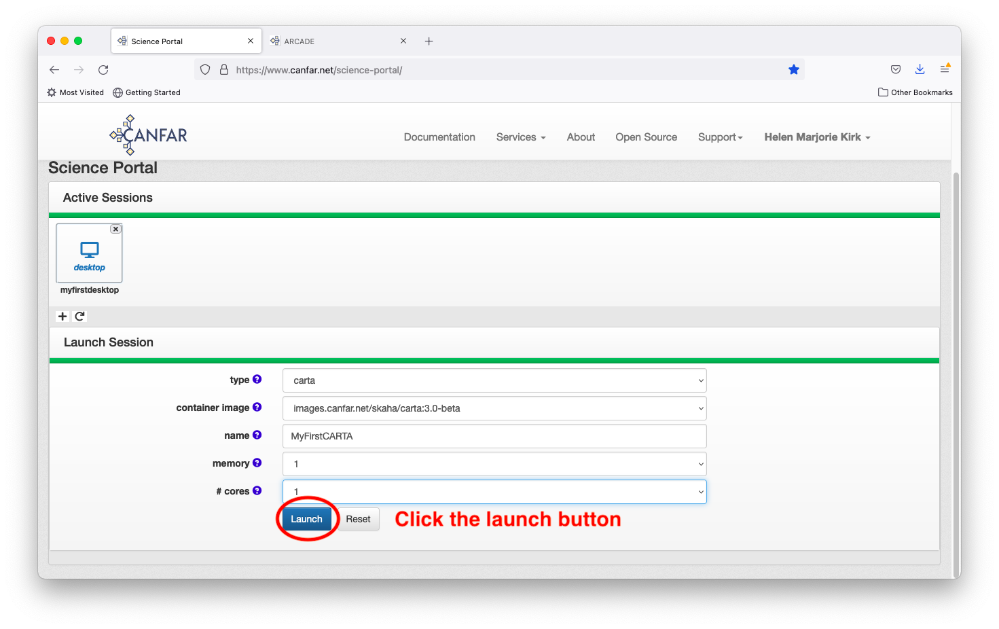
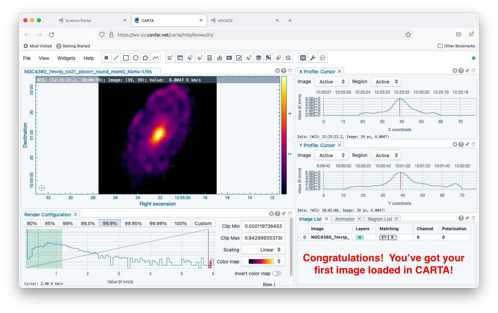

Launching a CARTA session¶
After logging in to the science portal and clicking the plus sign to launch a new session, choose a session type of ‘carta’.

Note that the remaining menu bars and options update automatically after your session type selection. There are currently three options for ‘container image’: choose the version of CARTA that you need here (1.4, 2.0, or 3.0 beta).

Give your session a descriptive name; this will later appear on your Science Portal page if you need to log in again later.

Next select the maximum amount of RAM that you anticipate requiring. It is best to choose the smallest value that is reasonable for your needs, as the computing resources are shared amongst all users. A very large RAM request may slow or prevent you from launching a session if the necessary resources are not currently available on the system. If you are unsure of what you need, the default value of 16MB is a safe assumption - it is the amount of RAM available on a MacBookPro.

Similarly, select the maximum number of computing cores that you anticipate requiring. As with the RAM, it is best to choose the smallest number that you expect to need. If you are unsure of what you need, the default value of 2 cores is likely sufficient. Most of the time, only one core would be required.

Now, hit the launch button and wait for your session to launch.

Congratulations! You’ve started your first CARTA session. You are automatically returned to the main science portal page, where your desktop session appears as an icon, with your chosen descriptive name. Access the session by clicking on the session icon.

Wait while the session loads, after which you arrive at the main landing page.


Now, navigate through to the file that you would like to display on CARTA. For information on how to upload files, see Using VOS Tools. This tutorial assumes that you have a file uploaded already. First, click the icon on the upper left to navigate up one directory.

Files saved in your desktop session can be found in the home/[username] directory. Click through the directory structure until you reach your desired file. Select the file and click the load button.

Congratulations! You’re displaying your first image in CARTA!
